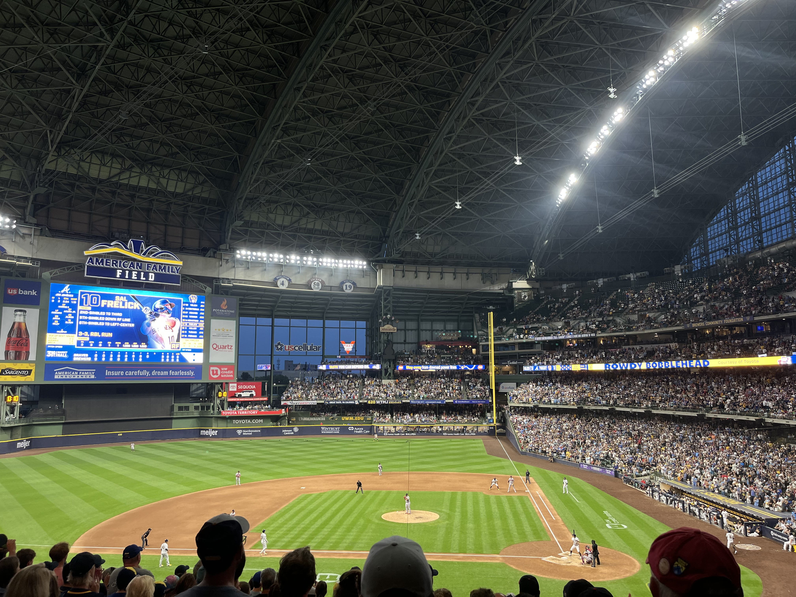
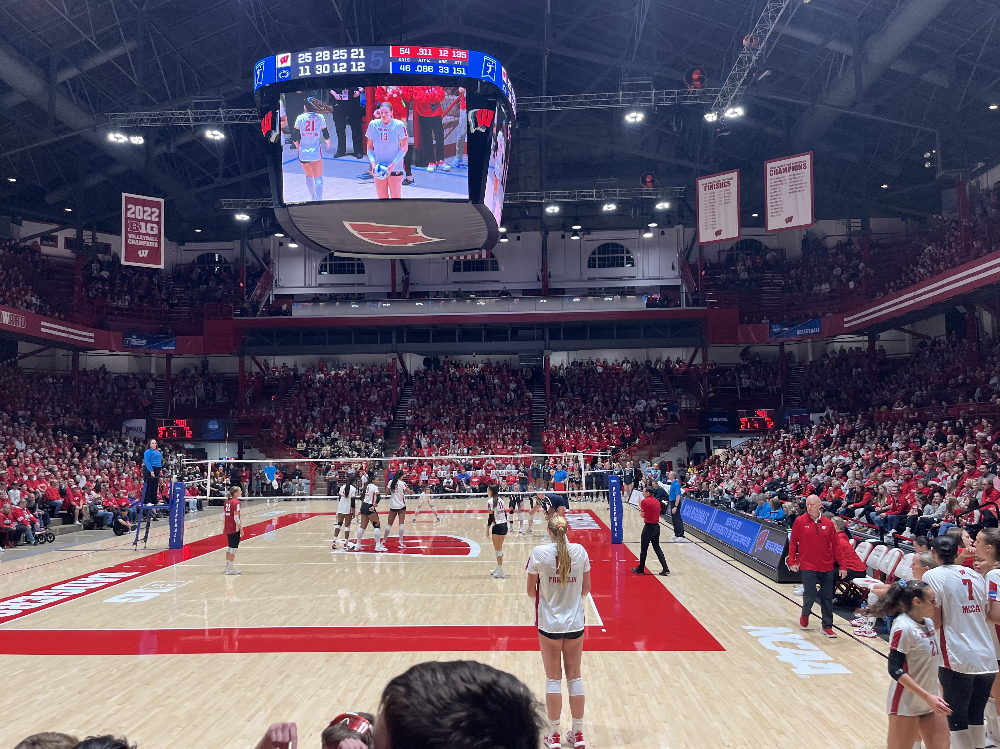

Sports
Growing up I was surrounded by sports. Playing three sports as a kid, my dad being a football coach, and watching Wisconsin sports since I can remember. I love sports and going to sporting events, and I hope to one day work in sports. Here I wanted to show a couple of my favorite sports teams to cheer for!
Milwaukee Brewers!

All my life I have been a Milwaukee Brewers fan. I grew up watching their games on TV and going to games at Miller Park. Going to Brewer games is one of my favorite parts of the summer, and it is a dream of mine to work for them one day.
Wisconsin Badgers!

Being a student at the University of Wisconsin-Madison gives me so many opportunities to go to sporting events since we have so many different teams. While I have been many differnt sporting events my favorites to attend are Football, Volleyball, and Basketball games!